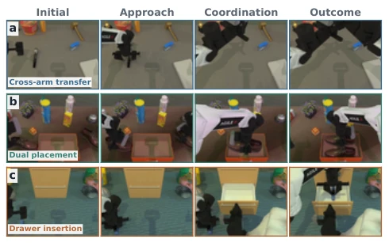
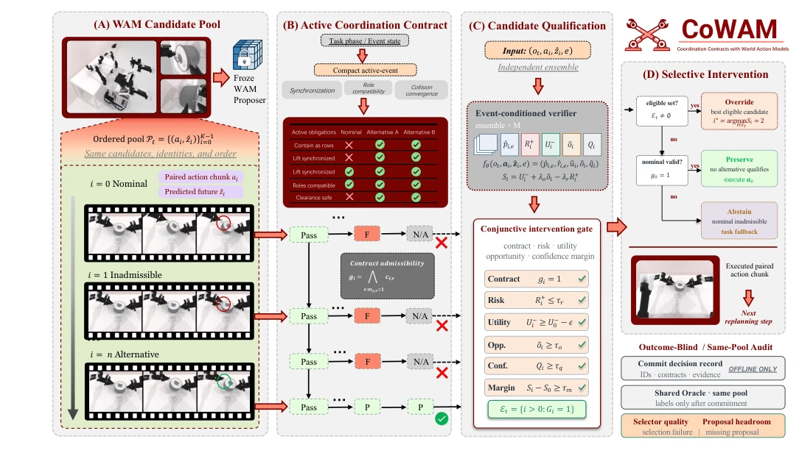
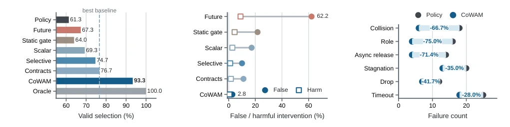
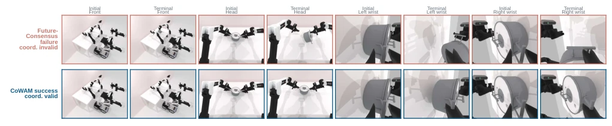
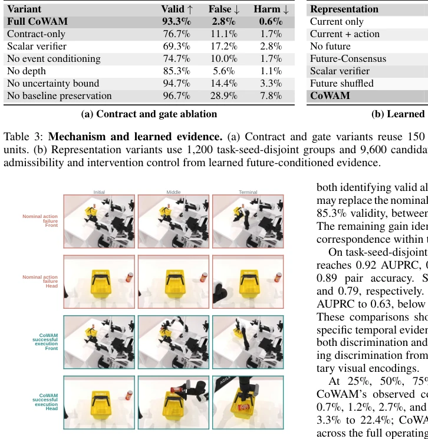
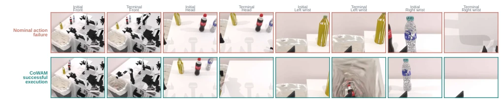

Although WAM's promises are appealing, directly using it to modify actions is prone to 'overthinking'. CoWAM adds a 'contract' to these prediction models, specifying when intervention is permitted and when to remain silent. This 'conservative' strategy is indeed stable in simulation, with success rates rising impressively, but at the cost of computational overhead and dependence on specific bimanual structures. The most critical point is that it separates 'choosing well' from 'modifying correctly'; this auditing approach is sound, but unfortunately, it is currently self-satisfied within RoboTwin, so do not rush to hype it before real-robot deployment. Additionally, it relies on a frozen WAM pool; if the proposal quality itself is poor, the contract cannot save it. In short, it is a good 'brake pad', capable of preventing crashes, but do not expect it to serve as an 'engine' driving new strategies.
研究动机Motivation
双臂操作耦合紧密，涉及同步、角色分配和碰撞收敛（Figure 1）。现有 WAM 方法（Zhu et al. 2025; Li et al. 2025）虽能预测动作后果，但视觉合理性不等于协调有效性。单纯依赖未来一致性（Future-Consensus）或静态几何门控容易误判，导致有害干预。CoWAM 旨在解决‘何时干预’的决策问题，而非生成新动作。它需要区分提案质量与选择质量，避免在不确定性下盲目覆盖策略 Top-1，确保在复杂任务（如跨臂传递）中维持协调性。现有方法如 FOREWARN (Wu et al. 2025) 侧重语义对齐，而 CoWAM 聚焦物理协调约束，填补了 WAM 决策层的空白。
Bimanual operations are tightly coupled, involving synchronization, role assignment, and collision convergence (Figure 1). Existing WAM methods (Zhu et al. 2025; Li et al. 2025) can predict action consequences, but visual plausibility does not equal coordination effectiveness. Relying solely on future consistency (Future-Consensus) or static geometric gating is prone to misjudgment, leading to harmful interventions. CoWAM aims to solve the decision problem of 'when to intervene', rather than generating new actions. It needs to distinguish proposal quality from selection quality, avoiding blindly overriding the policy Top-1 under uncertainty, ensuring coordination is maintained in complex tasks (such as cross-arm transfer). Existing methods like FOREWARN (Wu et al. 2025) focus on semantic alignment, whereas CoWAM focuses on physical coordination constraints, filling the gap in the WAM decision layer.

Figure 1: Coordination-rich task structures. RoboTwin 2.0 examples span cross-arm transfer, parallel placement, and multi-stage insertion beyond simple pick-and-place, expos- ing synchronization, role-assignment, spatial-compatibility, and phase-consistency obligations.
Overall pipeline: Frozen WAM generates candidate pool -> Coordination contract evaluation -> Selective intervention. The core innovation lies in the 'coordination contract', defining synchronization, roles, and collisions as typed obligations. Each contract combines deterministic predicates (admissibility) and event-conditioned verification. The verifier outputs scalars such as risk, utility, and confidence, which are input to the gating after ensemble calibration. The gating is conjunctive logic, requiring simultaneous satisfaction of contract validity, controllable risk, utility retention, opportunity value, and confidence thresholds. Decisions are categorized into retaining nominal actions, overriding the best candidate, or abandoning (fallback). The key design is Outcome-Blind Same-Pool evaluation, where all selectors submit decisions before seeing results, ensuring fair comparison of selector quality and proposal upper bounds. This separation avoids confusing WAM generation capabilities with selection capabilities, making the evaluation purer. Additionally, the calibration mechanism uses ensemble variance to construct conservative boundaries, preventing harmful interventions caused by overconfidence.

Figure 2: CoWAM overview and method framework. A frozen WAM supplies action-future candidates; coordination contracts and calibrated evidence support selective preserve, override, or abstain decisions.
Tested on 8 bimanual tasks in RoboTwin 2.0 (Chen et al. 2025). Baselines include Policy Top-1, Future-Consensus, RGB-D selector, etc. Metrics cover coordination-effective selection rate, false/harmful intervention rate, and closed-loop success rate. CoWAM achieves an effective selection rate of 93.3% and a closed-loop success rate of 62.9%, outperforming the strongest baseline by 9.6%. Harmful intervention is below 1%. Ablation shows event-conditioned evidence and calibrated gating are crucial. Cross-proposal sources (X-WAM, LeWorldModel) validated interface reusability. Figures 3 and 5-7 demonstrate quantitative advantages and qualitative cases. Compared to Contract-only, CoWAM improved the effective selection rate by 16.7%, proving the necessity of learning evidence. Among 180 matched negative samples, CoWAM produced only 5 false interventions and 1 harmful intervention, far lower than Future-Consensus's 112 false interventions, reflecting the effectiveness of its conservative intervention.

Figure 3: Observed intervention outcomes. CoWAM achieves the strongest deployable valid selection, the lowest error among selectors that intervene, and fewer failures in every recorded category.

Figure 5: Lift Pot: CoWAM coordination success. From the same restored state and candidate pool, Future-Consensus fails while CoWAM selects an alternative that achieves task success and coordination validity across all recorded camera views.

Figure 6: Place Can in Basket: CoWAM success. Initial, intermediate, and terminal views contrast the nominal failure with CoWAM’s successful object acquisition, transport, and basket placement.

Figure 7: Put Bottles in Dustbin: CoWAM success. Front, head, and wrist views contrast the nominal failure with CoWAM’s successful two-arm object assignment and phase-consistent placement.